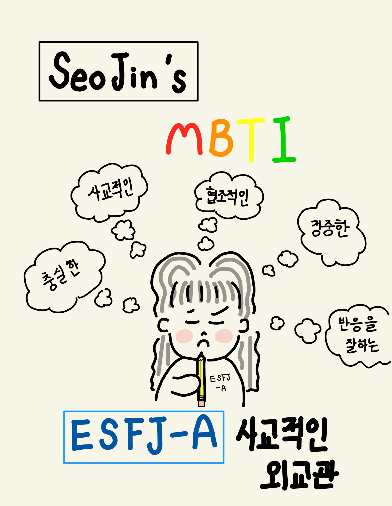

① 김서진의 MBTI는?
/ ESFJ-A 사교적인 외교관 /
 <--자신의 MBTI가 궁금하시다면[클릭]해주세요.----------------------------------------------------------------------------------------
----------------------------------------------------------------------------------------
----------------------------------------------------------------------------------------